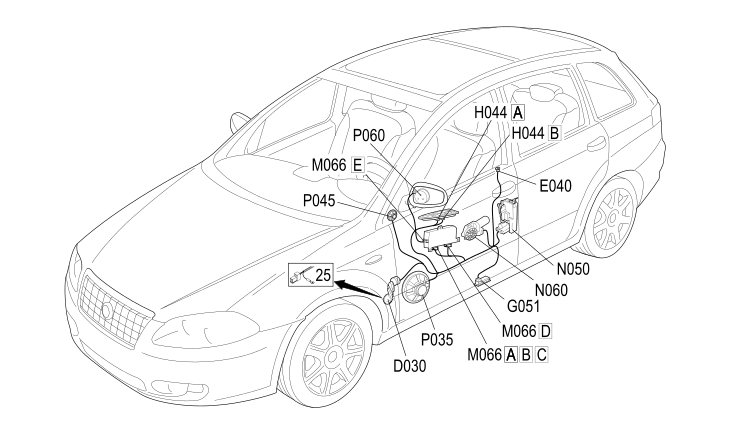

30 LEFT FRONT DOOR
- Path
- Electrical equipment > 2 WIRING > 30 LEFT FRONT DOOR
- Kind
- wiring harness
- Applies to
- all engines; all production periods
- Interactive page
- https://sloeber94.github.io/elrnDB-fCrm/en/#/194001819
Applies to: all engines; all production periods

Topics that link to this page (15)
- D030 DRIVER'S FRONT DOOR COUPLING (LEFT FRONT DOOR)
- E040 ALARM LED (LEFT FRONT DOOR)
- G051 LEFT FRONT DOOR LIGHT (COURTESY) (LEFT FRONT DOOR)
- H044A ELECTRIC WINDOW CONTROLS ON FRONT DRIVER'S DOOR (LEFT FRONT DOOR)
- H044B ELECTRIC WINDOW CONTROLS ON FRONT DRIVER'S DOOR (LEFT FRONT DOOR)
- M066A DRIVER'S DOOR CONTROL UNIT (NPG) (LEFT FRONT DOOR)
- M066B DRIVER'S DOOR CONTROL UNIT (NPG) (LEFT FRONT DOOR)
- M066C DRIVER'S DOOR CONTROL UNIT (NPG) (LEFT FRONT DOOR)
- M066D DRIVER'S DOOR CONTROL UNIT (NPG) (LEFT FRONT DOOR)
- M066E DRIVER'S DOOR CONTROL UNIT (NPG) (LEFT FRONT DOOR)
- N050 LEFT FRONT DOOR LOCK GEARED MOTOR (LEFT FRONT DOOR)
- N060 LEFT FRONT ELECTRIC WINDOW MOTOR (LEFT FRONT DOOR)
- P035 SPEAKER IN LEFT FRONT DOOR (LEFT FRONT DOOR)
- P045 LEFT FRONT TWEETER SPEAKER (LEFT FRONT DOOR)
- P060 LEFT EXTERNAL REAR VIEW MIRROR (LEFT FRONT DOOR)